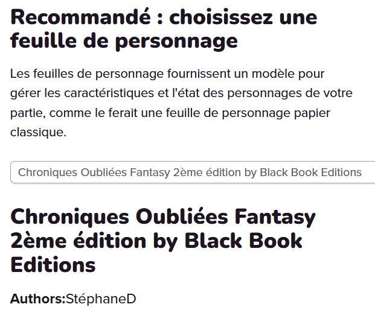

Sommaire
- Comment utiliser Le script
- Tokens et personnages
- Les commandes
- Macros, abilities et listes d'actions
- Prédicats
- Méthodes de sélection de groupes
- Gestion du temps (rounds, repos, ...)
- Équipement
- Actions principales
- Jet de caractéristiques
- Les attaques
- Dégâts et soins
- Statut et états
- Sorts
- Déplacements
- Lumière
- Anonymat et fausses identités
- Autres aspects du jeu
- Voies de peuples
- Voies de profils
- Arquebusier
- Barbare
- Barde
- Chevalier
- Druide
- Ensorceleur
- Forgesort
- Guerrier
- Magicien
- Moine
- Prêtre
- Rôdeur
- Sorcier
- Voleur
- Voies de prestige
- Autres capacités
- Markers personnalisés
- Console API
- Généralités sur la Console API
- Principaux messages d'erreur
- Principaux messages d'information
- Purger les variables d'état du jeu
- Index des prédicats
- Index des effets
Documentation pour la version 1.00 de COFantasy2
1. Comment utiliser Le script
Ce script a été écrit pour fonctionner avec la fiche de personnages développée par StéphaneD (documentation de la fiche).

1.1 Tokens et personnages
Chaque token avec lequel vous souhaitez interagir doit représenter un personnage.
La barre 1 représente toujours les points de vie du token.
La barre 2 représente les points de mana.
La barre 3 est utilisée pour donner un modificateur temporaire à l’attaque du token.
La barre 4 est utilisée pour les dégâts temporaires (penser à activer son affichage). Elle est vide la plupart du temps, pour ne pas prendre trop de place.
Il est possible de mettre automatiquement les bonnes valeurs sur le token par défaut en utilisant la commande !cof2-link-token. Cela peut se faireen sélectionnant un token sur la carte, mais il faut alors que le token représente la fiche, ou au moins qu'il ait le même nom. En utilisant !cof2-link-token --selectChar @{nom|character_id}, où nom est le nom de la fiche, on peut mettre tout à jour sans avir de token sur la carte : il suffit d'avoir mis une image de token sur la fiche. Il faut malgré tout que le script puisse utiliser l'image, c'est-à-dire que l'image doit être dans une bibliothèque personnelle, ça ne peut pas être une image directement prise du marketplace. Dans ce cas, il faut impérativement mettre le token sur la carte.
Les statuts des tokens sont en partie utilisés pour représenter des états. Voir plus loin pour la liste des statuts utilisés par le script. Pour tenir compte d'autre états non visibles sur les tokens, le script utilise des attributs supplémentaires (hors fiche).
Certains messages tiennent compte du genre (masculin ou féminin) des personnages. Ils utilisent le champ Genre de la fiche de personnage. Un personnage est reconnu comme féminin si ce champ commence par la lettre F.
Les mooks et la numérotation des tokens
Il est important de noter la différence entre les tokens liés à un personnage (la barre 1 est liée aux points de vie du personnage, tout changement sur la fiche se répercute sur le token), et les tokens non liés (dans ce cas, la fiche de personnage est générique, et chaque token est une instance différente, avec des PV indépendants). Dans Roll20, ces tokens non liés sont appelés des mooks.
Pour gérer les états spécifiques à un mook, le script utilise des conventions de nom d'attribut utilisant le nom du token. Pour que cela fonctionne correctement, il est important que deux tokens indépendants ne portent pas le même nom, même s'ils représentent le même personnage. Pour cette raison, le script va automatiquement renommer les tokens indépendants, en leur associant un numéro. Il est toujours possible de remodifier le nom après la création du token, mais dans ce cas, c'est vous qui gérez...
1.2 Les commandes
La façon la plus simple d'interragir avec le script est de taper des commandes dans le chat de Roll20. Les commandes pour ce script commencent toujours par !cof2- et contiennent tout ce qui est écrit jusqu'à ce qu'on presse sur entrée. Si on utilise une commande du script dans une macro, cela signifie qu'il de faut pas de retour à la ligne. Le premier mot de la ligne est l'action. Il est ensuite suivi d'un ou plusieurs blancs qui sont les arguments de l'action, par exemple, pour !cof2-centrer-sur-token, il n'y aura qu'un argument, le nom du token. Les arguments sont séparés entre eux de 1 ou plusieurs blancs.
La plupart des actions acceptent aussi des options, qui ont toutes la même forme : elles commencent par -- directement suivi (sans blanc) du nom de l'option, puis de ses paramètres séparés par des blancs.
1.3 Macros, abilities et listes d'actions
Comme tous les scripts, ce script est utilisable tel quel dans le chat, mais il est pensé pour être utilisés par des macros qui permettent un autre niveau d'automatisation parfois difficile d'accès au sein des scripts. le script génère d'ailleurs la plupart des macros utiles à la première utilisation, et il met automatiquement les macros à jour à chaque changement de version. Il est possible de demander des les re-créer en tapant la commande !cof2-set-macros dans le chat.
Le script ne peut pas mettre les macros dans la barre de raccourci. Je recommande que chaque joueur se crée sa macro Centrer, contenant le code !cof2-centrer-sur-token nom_de_leur_token_principal, qui leur permettra en un click de centrer la vue de la carte sur leur token. Pour le MJ, le script suggère de mettre un certain nombre des macros qu'il crée, au moment de la première utilisation.
Listes d'actions
Les listes d'action, présentes dans l'onglet SCRIPT de la fiche, sont une façon de regrouper et d'afficher des commandes pour COF2. Elles peuvent donc se substituer aux macros ou aux abilities, mais avec des restrictions. L'architecture des listes dans les fiches Roll20 ne permet pas vraiment d'avoir un nombre quelconque de liste : pour l'instant, la fiche en propose 5. La première liste d'action est particulière, car elle est utilisée pour les actions à proposer à chaque fois que c'est le tour du personnage quand le temps est découpé en rounds. Chaque liste d'action possède un titre, et vous pouvez modifier les titres de listes 2 à 5. Pour faire afficher une liste d'actions, on peut utiliser la commande !cof2-liste-actions titre en sélectionnant un personnage. Sans argument, cela va afficher la première liste, sinon cela affiche la liste de titre titre. On ne peut utiliser les action d'une liste d'action qu'en affichant celles-ci dans le chat.
Chaque action de la liste se compose d'un nom d'action, d'un type d'action (pour les actions limitées, d'attaque ou de mouvement) et d'une commande. Enfin, une case peut être décochée pour déactiver temporairement l'affichage de l'action. Le nom de l'action peut soit être directement une commande (commençant par %, # ou !), et dans ce cas l'action affichée sera déterminée par le script, soit du texte qui sera affiché tel quel. Dans ce cas, il sera souvent nécessaire de préciser le code de l'action dans le champ Commande de script. La commande peut être un text contenant des macros et des abilities. Si après expansion des macros et abilities, elle commence par un !, elle sera exécutée telle quelle quand on cliquera sur le bouton dans le chat. Sinon, le script exécutera la commande !cof2-action suivi du texte du code. Si la commande comporte des retours à la ligne, chaque ligne est interprétée, puis passée en argument à !cof2-multi-command. N'oubliez pas que vous pouvez faire afficher une autre liste en utilisant la commande !cof2-liste-actions, ça peut être utile pour afficher une liste moins longue et regrouper certaines actions de manière logique (par exemple mettre tous les sorts dans une liste dédiée).
Il existe un certain nombre de commandes spéciales, qui peuvent être rentrée dans le titre ou le code :
!attaquesfera afficher toutes les attaques cochées de la fiche!arme-en-mainaffichera l'attaque correspondant à l'arme en main, ou si aucune arme n'est en main, une attaque naturelle non cochée, et si il n'y en a pas non plus, une attaque à mains nues. Vous pouvez faire suivre cette commandes d'options d'attaque, comme--deBonus.!optionspassera en option à toutes les actions suivantes tout ce que vous écrirez dans la même ligne.
1.4 Prédicats
Une façon courante d'informer le script qu'un personnage dispose d'une capacité particulière (que ce soit dû à son entraînement, à un objet porté, ou l'utilisation de règles particulières par le MJ) consiste à utiliser des prédicats. Il s'agit de mots clés à rentrer dans des zones de texte dédiées de la fiche, comme par exemple la zone Prédicats, visible depuis l'onglet Script. Ces mots clés peuvent être séparés de blancs ou de retours à la ligne.
On peut associer une valeur à un prédicat (le plus souvent un nombre, mais en fait n'importe quel mot qui ne contienne ni virgule, ni blanc, ni :). Pour cela, faire suivre le prédicat de : puis de la valeur. Si vous avez besoin des virgules, blanc ou : dans les valeurs d'un prédicat, vous pouvez tout mettre entre ". Il faut juste faire attention au fait que les caractères \ sont alors interprétés comme une façon d'utiliser le caractère suivant. Par exemple, pour un prédicat compagnon, de valeur chaton / "tigre", il faudra écrire compagnon: "chaton / \"tigre\"".
Dans chaque ligne de la zone de prédicats, tout ce qui vient après // est considéré comme du commentaire et ignoré.
Les prédicats à valeur numériques ne se cumulent pas au sein d'une même zone de texte : le script prend la plus grande valeur, si le prédicat apparaît plusieurs fois. Pour les autres prédicats, en général, l'ensemble des prédicats est pris comme un seul prédicat, si cela est possible. Sinon, un seul prédicat est utilisé, les autres sont ignorés.
Le script va automatiquement inférer un certain nombre de prédicats selon les capacités possédées par le personnage. Pour afficher les prédicats actif d'un personnage, vous pouvez utiliser !cof2-log-preds.
1.5 Méthodes de sélection de groupes
Comme les joueurs ne peuvent pas sélectionner un nombre arbitraire d'ennemis, le script propose différentes options (à ajouter aux commandes) pour sélectionner des cibles :
- option
--cible tid: pour ajouter la cible ayant l'id de token tid. Par exemple, pour faire choisir une cible par le joueur, on peut utiliser l'option--cible @{target|token_id}. - option
--enVue: sélectionne tous les tokens en vue des personnages déjà sélectionnés. Accepte aussi un argument d'id de token, dans ce cas on ne garde que les tokens en vue de celui avec cette id. - option
--disque: le premier argument, optionnel, est l'id ou le nom d'un token qui représente un personnage, le deuxième argument un rayon. Cela sélectionne tous les tokens à une distance de moins que le rayon du premier argument (ou du personnage à l'origine de l'effet, si le premier argument est absent). Si un troisième argument est donné, il est interprété comme la portée maximum entre le centre du disque et le token du personnage à l'origine de l'effet. Si le premier argument représente un personnage avec un max de PV à 0, il est compris comme un personnage fictif créé juste pour définir le disque, et il sera supprimé après la sélection. À noter que le script crée par défaut un tel personnage, utilisable par tous, et appeléCible. - option
--disquePasseMur: comme--disque, mais l'effet traverse les murs. - option
--equipe nom: agit sur tous les personnages mentionnés dans l'équipe nommée nom. - option
--allies: sélectionne tous les personnages qui sont dans des équipes d'alliés communes avec un des personnages déjà sélectionnés. Optionellement, on peut préciser une id de token dont on doit sélectionner les alliés. - option
--alliesEnVue: comme--allies, mais ne garde que les alliés en vue (en fonction des murs sur le layer lumière). - option
--saufAlliespermet d'exclure les alliés de la sélection (voir plus haut pour la définition des alliés), ou du token mis en argument. - option
--touteLaPagesélectionne tous les tokens sur le layer token de la page. - option
--toutLeJeusélectionne tous les tokens du jeu.
Attention, on ne peut sélectionner que des tokens sur une même page.
Les équipes et les alliés
Une équipe, pour le script, est simplement un ensemble de personnages. À noter que tous les mooks d'une fiche donnée appartiennent forcément aux même équipes. L'usage principal des équipes est de faciliter les sélections (en utilisant l'option --equipe) et de définir les alliés des personnages.
Le script crée toujours au moins une équipe pour les joueurs (les personnages ayant une fiche de PJ et contrôlé par au moins un joueur, qui peut être le MJ). Par défaut, cette équipe est considérée alliée, mais cela peut être changé.
Pour lister et gérer les équipes, vous pouvez utiliser la commande !cof2-lister-equipes. Si des personnages sont sélectionnés quand la commande est lancée, elle ne va afficher que les équipes auquelles tous les personnages sélectionnés appartiennent.
Il est aussi possible de créer une équipe alliée rapidement en sélectionnant des tokens et en tapant !cof2-allier. En utilisant les options de sélection, il est facile de faire une équipes qui réunit toute les équipes des tokens sélectionnés.
1.6 Gestion du temps
COF2 formalise principalement deux échelles de temps : soit le temps compté round par round de 6 secondes (principalement pour le combat), soit le temps compté en fonction des repos courts et des repos longs. Le reste n'a pas d'impact sur les mécaniques de jeu. Le script ne garde donc que ces deux aspects, et vous devrez gérer le reste tout seuls.
Le temps au round par round
Dans le temps au round par round, les personnages agissent par ordre d'initiative. La façon la plus courante de passer dans ce mode, est donc d'utiliser la commande !cof2-init en sélectionnant les tokens qui vont participer à l'action. Cela fera apparaître le turn tracker de Roll20, avec les personnages triés. Le script affiche une liste d'actions possibles dans le tour pour le joueur qui contrôle le personnage dont c'est le tour de jouer. Il suffit de cliquer sur le bouton tour suivant du turn tracker pour passer au personnage suivant. Les tokens ayant un prédicat aucuneActionCombat ne sont jamais ajoutés au turn tracker.
À chaque instant, le token dont c'est le tour d'agir est signalé par une aura qui bouge lentement. L'image de cette aura peut être modifiée dans les options (!cof2-options images), et il est possible de spécifier une aura pour chaque token, en ajoutant une ligne dans le champ GM Notes du token (en bas de la partie basique de l'édition du token). Cette ligne doit commencer par init_aura:, et contenir une url valide pour un token. N'oubliez pas de sauvegarder le token comme token par défaut pour un personnage si vous voulez que ce personnage ait toujours cette aura. Le token dont c'est le tour est mis au premier plan, sauf si son personnage a un prédicat tokenEnDessous, ce qui peut parfois être plus pratique pour les très gros tokens.
Le script garde le compte des actions effectuées à travers les commandes ayant l'option typeAction, suivie du code de l'action:
- L: action limitée,
- A: action d'attaque,
- M: action de mouvement,
- G: action gratuite (qui nécessite d'être conscient).
!cof2-action, avec un petit texte explicatif. Par exemple !cof2-action ouvre la porte --typeAction M.
Par défaut, les tokens dont ce n'est pas le tour ne peuvent pas être déplacés par les joueurs. La liste des actions qui apparaissent au tour d'un personnage contient une action permettant de bouger ce personnage d'une distance maximale de 10 m (valeur qui peut être changée sur la fiche). Les autres actions affichées dépendent des attaques de la fiche, des capacités cochées sur la fiche, et de la liste d'actions de l'onglet SCRIPT. Cette liste d'actions personnalisable permet de proposer des actions qui diffèrent des règles normales, ou qui ne sont pas encore gérées par le script.
Normalement, le script affiche au joueur une liste d'actions actualisée après chaque action limitée, d'attaque ou de mouvement, mais si le joueur a besoin de réafficher cette liste, il peut selectionner son token, et cliquer sur le bouton A⩧. Le MJ peut à tout moment faire passer au personnage suivant dans le turn tracker, et le script proposera au joueur de finir son tour quand il n'aura plus d'action à faire. Si vous en avez besoin, vous pouvez aussi lui faire utiliser la commande !cof2-tour-suivant.
Pour mettre fin à la gestion du temps au tour par tour, le script fournit une macro Fin-combat. Cette macro appelle en interne la commande !cof2-fin-combat.
Les durées en minutes
Pour les effets à durée en minutes, on peut préciser la durée avec une option --dureeEnMinutes, suivi de la durée (entière). Le script fait passer une minute tous les 10 tours en combat, et une minute à la fin du combat, pour arrondir. Vous pouvez encore avancer le temps avec la commance !cof2-passer-minutes.
Les repos
Pour faire passer un récupération rapide à un personnage, utilisez !cof2-recuperation rapide. Si le personnage a encore des DR, cela lui affichera un bouton pour en depenser un.
Pour une récupération complète, utilisez !cof2-recuperation complet , auquel vous pouvez ajouter un nombre positif pour faire jeter des jets de CON avec cette difficulté. Les personnages qui ont des DR pourront choisir d'en dépenser un.
1.7 Équipement
Dégainer une arme : !cof2-degainer N
Ce que le personnage porte en main est visible sur la fiche, dans l'onglet ATTRIBUTS, sous-onglet EN MAIN. Le script utilise cette information, par exemple pour les attaques utilisant l'arme en main, ou pour des capacités comme Plus vite que son ombre. Pour faciliter la gestion des armes en main, le script propose plusieurs mécanismes :
!cof2-degainer Loù L est le label d'une des attaques sur la fiche de personnage : cela fait rengainer l'arme en main et dégainer l'arme correspondant à cette attaque. Si le label ne correspond à aucune attaque (ou qu'on ne donne pas de label), l'action fait rengainer l'arme en main. On peut donner en argument 2 labels d'armes, pour faire dégainer à la fois une arme dans la main dominante (le premier label) et une arme dans l'autre main.!cof2-degainer l gauchepermet de dégainer (ou rengainer) uniquement une arme dans l'autre main. L'ordre de rengainer sans argumentgaucheoudroitefait rengainer les deux armes (si le personnage en porte deux). À noter que le script utilise les notions de main droite et de main gauche dans un soucis de simplification. Un personnage gaucher pourra utiliser les termesdominantoufaibles'il préfère. L'intérêt principal de cette commande, c'est qu'on peut lui donner en argument un--typeActionpour utiliser une action de mouvement ou d'attaque.- Si on attaque avec
!cof2-attaque tok1 tok2 L, et que l'attaque est de typeArme en main, alors on considère qu'on doit dégainer cette arme pour pouvoir l'utiliser. Le script envoie le message et considère ensuite l'arme comme étant en main, au MJ de vérifier que le joueur dispose bien d'une action de mouvement pour le faire. - Enfin, en fin de combat, si le personnage possède un prédicat
armeParDefaut, le script va lui faire dégainer l'arme dont le label est la valeur du prédicat. Donc si le prédicat n'a pas de label associé, le personnage va rengainer son arme.
Dans tous les cas, si le personnage dégaine une arme à 2 mains, le script fait enlever le bouclier.
Objets magiques
Utilisation des ressources (potions, parchemins, ...) !cof2-lister-ressources
Cette fonction affiche la liste des ressources de la fiche (onglet "Équipement"), avec la possibilité de cliquer sur un élément de la liste pour l'utiliser (et activer son effet) ou l'échanger avec un autre personnage (via le symbole d'échange).
Pour l'instant, seules les commandes !cof2-effet, !cof2-attaque, !cof2-action et !cof2-soin diminuent correctement le nombre de consommables.
Attention :
- Pour la commande
!cof2-attaque, il est vivemement recommandé de ne pas utiliser de label, mais uniquement un nom et des options si vous voulez faciliter l'échange du consommable. - De manière générale, faites attention avec les références utilisé dans le consommable du personnage qui utilise le consommable.
L'échange via le symbole ↔ vous permettra de sélectionner un token destinataire qui recevra le consommable dans sa liste. Si le consommable existe déjà pour le destinataire, sa quantité sera augmenté de 1, sinon le consommable sera créé.
Cette fonction peut-être très utile pour que les PJ échangent entre eux un consommable, mais aussi pour faciliter la vente d'objet entre PNJ et PJ.
Pour cette dernière, il vous suffira de préparer un personnage avec un token qui contient, dans son équipement, les consommables à échanger/vendre.
2. Actions principales
Pour la plupart des actions ci-dessous, il est généralement utile de créer des macros facilitant leur utilisation. Pour mettre en place un jeu de macros par défaut, vous pouvez taper !cof2-set-macros dans le chat. Si vous souhaitez redéfinir des macros existantes, vous pouvez taper !cof2-set-macros --force.
2.1 Les jets de caractéristiques
!cof2-jet carac : fait un simple jet pour la caractérisique sélectionnée.
Si on ne donne aucun argument (en dehors des options), la commande demande de préciser la caractéristique à tester. Cliquer sur une caractéristique propose au joueur de choisir un bonus évolutifs, de peuple et de voie de prestige (s'il en a) adaptés au test. De plus, s'il existe un handout nommé Compétences, celui-ci sera aussi utilisé pour proposer pour chaque caractéristique un choix de compétences à tester. Le handout doit contenir dans ses notes des lignes commençant par une caractéristique (FOR, AGI, ...), suivi de :, puis des noms de compétences, séparés par des blancs, des retours à la ligne, des virgules ou des /.
La commande accepte les arguments suivants:
--difficulte ila difficulté du test--bonus bpour spécifier un bonus numérique bi au jet.--bonusEvolutif bpour un bonus évolutif. b peut soit être un nombre, soit un nom de bonus évolutif.--bonusPeuple bpour un bonus de voie de peuple. b peut soit être un nombre, soit un nom de bonus de peuple.--bonusPrestige bpour un bonus de voie de prestige. b peut soit être un nombre, soit un nom de bonus de voie de prestige.--deBonuslance le jet avec un dé bonus.--deMaluslance le jet avec un dé malus.--predicatpour spécifier un prédicat dont la valeur doit être ajoutée au jet. Il est possible de spécifier plusieurs prédicats.--attributpour spécifier un attribut dont la valeur doit être ajoutée au jet. C'est pratique, par exemple pour avoir un bonus temporaire générique.--competenceprécise le nom du jet à afficher. De plus, cela va aussi faire rechercher une compétence de même nom (sans tenir compte des majuscules) pour une fiche de PJ et un attribut ou un prédicat pour une fiche de PNJ. Par exemple!cof2-jet AGI --competence Discrétionva lancer un jet d'agilité, qui sera affiché comme un jet de Discrétion, et qui va ajouter au jet le bonus d'une compétence discrétion ou d'un éventuel prédicatdiscrétion.--secret: le jet n'est visible que par les personnes qui contrôlent le personnage, plus le MJ. Si la personne qui a lancé la commande est MJ, il sera le seul à voir le résultat.--listeCompetences: si la commande n'a pas déjà d'option--competence, invite l'utilisateur à choisir une compétence parmis une liste correspondant à la caractéristique (incluant celles provenant du handoutCompétencestel que défini plus haut).--plageEchecCritique c: permet de considérer tout jet de dé inférieur ou égal à c comme un échec critique.--succes message: affiche message en cas de succès au jet. N'a pas d'effet si la difficulté du jet n'est pas définie.
Si le personnage possède un attribut numérique modificateurTests, ce modificateur sera pris en compte pour tous les tests.
Dans les options de jeu (affichés en utilisant !cof2-options, dans le menu des options d'affichage, il est possible de choisir de ne faire afficher les résultats qu'au MJ, qui peut alors en cliquant sur un bouton le montrer aux joueurs (ou pas).
Enfin, il est possible de faire lancer des jets de chance avec !cof2-jet-chance. Si plusieurs tokens sont selectionnés, le script triera les jets de chance par ordre croissant.
2.2 Les attaques
!cof2-attaque @{selected|token_id} @{target|token_id} n
où n est un argument optionnel qui peut soit correspondre au label de l'attaque sur la fiche du personnage (ce label est automatiquement généré par la fiche et affiché juste devant le nom), soit être le nom de l'attaque. Si cet argument est -1, le script cherchera si le personnage a une arme en main et utilisera cette arme. Si c'est -2, il va chercher l'arme en main gauche. Si cet argument est absent ou qu'il ne correspond pas à un label de la fiche du personnage, l'attaque aura les valeurs par défaut d'une attaque au contact infligeant 1d4 DM. Pour plus de facilité, vous pouvez utiliser la macro Attaque qui fait !cof2-attaque @{selected|token_id} @{target|token_id}
Exemple avec label :
!cof2-attaque @{selected|token_id} @{target|token_id} 1
L'attaque tient alors compte de toutes les informations sur la fiche. La plupart d'entres elles sont expliquées dans la documentation de la fiche, mais celles apparaissant sur la seconde ligne ont une utilité particulière pour le script. Les modificateurs sont constitués d'options sans argument, séparées par une espace et/ou une virgule. Les options sont reprises telles quels comme un argument à l'attaque (voir plus bas pour le liste de ces options). Attention, pour l'instant ne traite correctment les jets (parties entre crochets) et les demandes au joueur (de type ?{question?}) que si on passe par une liste d'actions (donc pas directement en faisant #Attaque 1 dans le chat). Une troisième ligne peut aussi s'afficher, pour gérer le nombre d'armes de jet, ou pour les armes portées, pour indiquer des prédicats actifs seulement quand on porte l'arme. Il est possible de spécifier une arme batarde (pouvant se porter à une ou deux mains) en renseignant un prédicat batarde de valeur le dé de DM à utiliser quand on porte l'arme à deux mains.
En l'absence de label, on peut spécifier ces informations sous forme d'options d'attaque
Exemple pour le sort "Flèche enflammée" :
!cof2-attaque @{selected|token_id} @{target|token_id} Flèche de feu --toucher [[@{selected|atkmag}]] --dm 3d4e + [[@{selected|INT}]] --portee 30 --fx beam-fire --feu --sortilege --enflammeMalus ou bonus temporaire à une attaque : utiliser la barre 3.
Toutes les attaques ayant une portée non nulles sont considérées par le script comme des attaques à distance.
Le test d'attaque à distance tient compte de la portée (malus de -1 à -5 si distance entre portée et deux fois cette valeur), ainsi que des tokens sur le trajet de l'attaque. Une attaque de trop loin ne porte jamais.
Utiliser une attaque fait rentrer l'attaquant en combat (et le rajoute au turn tracker).
Il existe une version spécialisée permettant de faire des dégâts dans un disque centré sur un token, !cof2-explosion, dont le premier argument doit être le label d'une attaque.
Options pour l'attaque :
--nom txt: nom de l'attaque à afficher. Remplace le nom dans la ligne d'attaque si on a donné un label en argument. Le nom ne doit pas comporte de blanc suivi de 2 tirets (--).--toucher n: bonus de base de l'attaque. Remplace les valeurs dans la ligne d'attaque si on a donné un label en argument. Pour référence, sur les fiches de PJ, l'attaque au contact est@{selected|atkcac}, l'attaque à distance@{selected|atktir}, et l'attaque magique@{selected|atkmag}.--crit n: valeur à partir de laquelle le jet de dé est un critique. Remplace les valeurs dans la ligne d'attaque si on a donné un label en argument.--dm expr: Dégâts de base de l'attaque. Remplace les valeurs dans la ligne d'attaque si on a donné un label en argument. expr peut être un entier ou bien une expression du typeadb+c. La partie constante de cette expression est optionnelle et peut être négative.--portee n: la portée de l'attaque exprimée en mètres. Remplace les valeurs dans la ligne d'attaque si on a donné un label en argument.--special txt: remplace le champ spécial de l'attaque sur la fiche.--tempDmg: l'attaque fait des dégâts temporaires (tient compte de la force de l'adversaire, utilise la barre 2 pour les dmg temp, sauf si le token a des PM, auquel cas on utilisera un attribut temporaire).--pasDeDmg: l'attaque ne fait pas de DM.--attaqueContactOpposee: la difficulté du jet d'attaque est un jet d'attaque au contact de la cible.--attaqueMagiqueOpposee: la difficulté du jet d'attaque est un jet d'attaque magique de la cible.--manoeuvre nom: l'attaque est une manœuvre de nom nom. En soit, affecte juste le rendement décroissant. Les autres effets doivent être spécifiés en option.--poudre: l'arme est une arme à poudre, utilisation d'un dé de poudre. Une arme est aussi considérée comme une arme à poudre si elle contientpoudredans le nom de l'arme ou dans le champ modifcateur ou de prédicats.--epieu: l'arme est un épieu. À noter que l'arme est aussi considérée comme un épieu si elle contientépieudans son nom ouepieudans son champs modificateurs ou prédicats. Cette option augmente de 1 le nombre de dés contre un adversaire sans armure.--hache: l'arme est une hache. À noter que l'arme est aussi considérée comme une hache si elle contienthachedans son nom ou dans son champs modificateurs ou prédicats. Cette option permet de passer la RD/hache (pour les sylvaniens, par exemple).--marteau: l'arme est un marteau. À noter que l'arme est aussi considérée comme un marteau si elle contientmarteaudans son nom ou dans son champs modificateurs ou prédicats.--arcCourt: l'arme est un arc court. À noter que l'arme est aussi considérée comme un marteau si elle contientarc courtdans son nom.--auto: l'attaque réussit automatiquement--bonusAttaque n: ajoute n au jet d'attaque--bonusCategorieDeTaille: ajoute +5 au jet d'attaque par différence de catgéroie de taille entre l'attaquant et sa cible. Le bonus est négatif si la cible et plus grande que l'attaquant.--bonusCritique n: augmente n à la plage de coups critiques--modifiePortee n: ajoute n à la portée de l'attaque.--divisePortee n: divise la portée de base par n. C'est appliqué avant toute modification de portée.--armeDeContact: indique que l'arme peut aussi être utilisée au contact, sans dé malus, avec la valeur d'attaque au contact, et en utilisant le bonus de force aux DM. C'est particulièrement utile pour les armes de jet, comme les dagues : on peut alors les mettre comme arme de jet, ce qui permet de compter combien il en reste en main, et de les utiliser aussi au ontact. Il faut bien mettre les bonus de toucher et de DM en version distance sur la fiche.--bonusContreBouclier n: ajoute n au jet d'attaque si le défenseur porte un bouclier. Utile par exemple pour le fléau d'arme.--bonusContreArmure n: ajoute n au jet d'attaque si le défenseur porte une armure.--psave carac seuil: jet de carac, si le jet est supérieur à seuil, les dégâts sont divisés par 2. carac est l'abbréviation de caractéristiques de 3 lettres standard (FOR, DEX, ...). Il est possible de prendre la meilleure de 2 caractéristiques pour le save : pour cela indiquer les 2 caractéristiques collées (donc 6 caractères, par exemple FORDEX, pour le meilleur de FOR et de DEX). Le script choisira automatiquement la caractéristique qui donne les meilleures chances de réussite (en tenant compte de la difficulté et des caractéristiques supérieures). Enfin on peut encore ajouter un ou des arguments optionnels. Si vous avez besoin de plus d'un argument optionnel, séparez-les par - Si on souhaite que le jet ne permette de réduire qu'une partie des dommages (la dernière ajoutée avec
--plus), on peut ajouterlocal. La syntaxe complète est alors--psave carac seuil local. - Si on souhaite indiquer une difficulté alternative pour les cibles au contact, ajouter
contact n, où n est la difficulté en question. - Si on souhaite augmenter la difficulté du save en fonction de la marge de réussite du jet d'attaque, ajouter
augmenteAvecMargeDeToucher. --dmSiRate dmg: si l'attaque rate, la cible est quand même touchée et se voit infliger dmg dégâts.--toucheDoubleDmg: si l'attaque rate, elle inflige les dégâts normaux, et si elle touche, elle double les dégâts de base. Pas cumulable avecdmSiRateoudemiAuto.--draineMana d: si l'attaque touche, elle enlève d points de mana. d peut être un nombre une expression de dés simple, comme1d4+1.--save carac seuil: même effet que--psave, mais pour annuler le dernier--effetouetat(aucun effet sur les DM). Si on rajoute un argumentdemiDureeau save, alors la réussite du save ne fait que diviser par 2 sa durée.--saveDM carac seuil: même effet que--psave, mais pour annuler l'ensemble des dégâts.--saveParTour carac seuil: même effet que--save, mais donne droit à un jet à la fin de chaque tour au lieu d'un jet au moment de l'attaque.--saveActifParTour carac seuil: même effet que--save, mais affiche un bouton pour faire le save dans la liste d'actions à chaque tour. Utile si les joueurs préfèrent jeter "eux-mêmes" le dé, ou si le save est sensé arriver au tour du joueur.--saveParJour carac seuil: même effet que--save, mais donne droit à un jet à la fin de chaque jour au lieu d'un jet au moment de l'attaque.--fx effet: ajoute un effet qui part de l'attaquant à la cible. Si l'attaque rate, l'effet rate aussi, d'autant plus que le jet d'attaque est loin de la défense. Il est possible d'utiliser un effet que vous avez défini vous-même en utilisant l'option--fx custom nom, où nom est le nom de votre effet.--fxCible effet: ajoute un effet au niveau de la cible (l'effet ne doit pas être directionnel). Comme avec--fx, on peut utiliser un effet qu'on a créé.-
--conditionAttaque condition: l'attaque n'est possible que si condition est validée. Une condition peut êtremoinsattribut : vrai si l'attribut attribut de la cible est strictement moins haut que celui de l'attaquantmoitieMoinsattribut : vrai si l'attribut attribut de la cible est au plus la moitié de celui de l'attaquantetate : vrai si l'état e est actif sur l'attaquant. Cet état peut être un des états définis plus bas, ou un attribut quelconque.attributattr val: vrai si l'attaquant possède un attribut attr, de valeur val, aux majuscules près. On peut optionnellement préciser qu'il s'agit d'un attribut par token en rajoutant le mot clélocal, ou encore qu'il sagit d'un attribut de la fiche, avec éventuellement sa valeur par défaut, en ajoutant le mot cléfiche defaut.etatCiblee : vrai si l'état e est actif sur toutes la cible. Cet état peut être un des états définis plus bas, ou un attribut quelconque.attributCibleattr val: vrai si la cible possède un attribut attr, de valeur val, aux majuscules près. On peut optionnellement préciser qu'il s'agit d'un attribut par token en rajoutant le mot clélocal, ou encore qu'il sagit d'un attribut de la fiche, avec éventuellement sa valeur par défaut, en ajoutant le mot cléfiche defaut.predicatCiblepredicat: vrai si la cible possède un prédicat predicat. On peut aussi spécifier une valeur auquel le prédicat doit être égal.typeCibletype: vrai si la cible est du type spécifié. Les types reconnus sontanimal,démon,dragon,fée,insecte,mauvais,mort-vivant,géant,gobelin, et si le type n'est pas reconnu, va chercher si la race ou un prédicat correspondant.deAttaquen : vrai si le jet de dé d'attaque est supérieur ou égal à n.touche: vrai si l'attaque touche.critique: vrai si l'attaque est un critique.echecCritique: vrai si l'attaque est un échec critique.premiereAttaque: vrai si c'est la première attaque du combat.
--if conditionoptions--endif: permet de ne prendre en compte des options que si certaines conditions sont réalisées. Il est possible d'utiliser un--elsepour activer des options quand les conditions ne sont pas réalisées. Attention, les options qui modifient une option précédente (comme--valeur) doivent apparaître au même niveau que l'option qu'elles modifient. Comme les conditions peuvent dépendre du dé d'attaque, un certain nombre d'options ne sont pas affectées par cette conditionnelle : les options d'aoe (ligne, cone, disque, target), auto, test, tempsRecharge, sortilege, bonusCritique, affute, poudre, feinte, magique, tranchant, perforant, contondant, pasDeDmg. Ne pas hésiter à me demander si vous aviez besoin que l'une de ces options puissent être conditionnelle.--ifSaveFails carac seuiloptions--endif: comme--if, mais fait réaliser une jet de sauvegarde à la cible (comme avec--save), et si le test est raté, applique les options qui suivent. Un--elsepermet de choisir des options à appliquer quand le test est réussi. À utiliser seulement si on ne peut pas se contenter d'un--save, car ça marche moins bien.--decrAttribute nom: l'attaque n'est possible que si l'attribut existe et si sa valeur est strictement positive. L'attaque diminue cette valeur de 1. On peut preciser une valeur plus grande après le nom de l'attribut (--decrAttribute nom dteste si la valeur est supérieure à d et la diminue de d). Si cette option est utilisée à l'intérieur d'un--if, alors l'option se contente de diminuer l'attribut (on peut savoir si la valeur est positive grâce à--if etat nom).--decrLimitePredicatParTour nom: l'attaque n'est possible que si un prédicat nom existe et si elle n'a pas été utilisée plus de fois dans le tour que la valeur de ce prédicat. L'attaque augmente ce nombre de 1.--tempsRecharge effet duree: l'attaque n'est possible que si l'effet est inactif sur l'attaquant, et de plus active l'effet sur l'attaquant pour la durée indiquée si l'attaque est possible. Il existe un effet temporaire générique,rechargeGen(desc)que vous pouvez utiliser si aucun effet existant ne correspond pour votre attaque.--etat e: si l'attaque touche, la cible passe dans l'état e. Il est aussi possible de spécifier une caractéristique et un seuil (comme pour!cof-set-state) pour faire afficher à chaque tour une action permettant de se libérer de l'état.--finEtat e: si l'attaque touche, la cible sort de l'état e.--effet e duree: ajoute à la cible l'effet temporaire e pour la duree spécifiée. Pour que cela soit automatiquement mis à jour, il faut utiliser le turn tracker. Noter que l'argument de durée peut être omis pour certains effets, comme ceux qui par définition durent tout le combat.--finEffet e: enlève à la cible l'effet temporaire e.--valeur v: spécifie une valeur au dernier effet mentionné.--optionEffet opt arg1 arg2 ...: spécifie une option au dernier effet mentionné. L'option opt doit être donnée sans le--et sera passée telle quelle à l'effet, par exemple pour les dégâts périodiques, si on ne veut pas que la RD s'applique, on pourra ajouter--optionEffet ignoreRD.--plus dmg: ajoute dmg dégâts. Attention, si dmg est un simple nombre, ces dégâts sont multipliés par les critiques (sauf si de type différent de l'attaque principale). Ainsi,--plus [[1d6]]donnera des dégâts multipliés par les critiques (car la fonction ne voit que le résultat du jet), alors que--plus 1d6ne le sera pas.--plusCrit dmg: ajoute dmg dégâts en cas de réussite critique--testpour voir le résultat du jet d'attaque. On n'applique pas les résultats d'un touché.--sournoise n: ajoute nd6 de dégâts d'attaque sournoise ou par surprise. Si l'option n'a pas d'argument, le nombre de dés rajoutés sera celui associé à un prédicatattaqueSournoise, et si l'attaquant n'a pas de prédicatattaqueSournoise, l'attaque ajoute juste 1d6. Le script limite le nombre d'attaque sournoise par personnage à 1 par tour. On peut augmenter ce nombre en utilisant un prédicatsournoisesParTour, de valeur la limite au nombre de sournoises pour ce personnage.--magique: les dégâts sont magiques. On peut passer en argument le niveau de magie. Il est utilisé contre les créatures immunisées aux armes. Le niveau par défaut est 1.--+k: l'attaque utilise une arme magique +k. Pratique à mettre dans les modificateurs de l'attaque (dans ce cas, on n'a pas les--), cela rajoute les bonus au toucher et aux dégâts, et indique que les dégâts sont magiques. Si un niveau de magie est spécifié, rajoute k à ce niveau.--feu,--acide,--electrique,--froid,--sonique, --poison, --maladie,--argent,--drain,--energie: les dégâts sont de type feu, acide, électrique, froid, sonique, poison, maladie, argent, drain ou énergie. Le type spécifie uniquement le dernier--plusprécédent cette option, ou si il n'y en a pas, celui des dégâts principaux. Seul le dernier type spécifié est pris en compte (pas de type multiple pour l'instant). Le type affecte différents attributs, et aussi la couleur d'affichage des dégâts.--beni: les dégâts sont d'une source sainte ou bénie. Sert principalement à signaler pour les résistances aux dégâts qui peuvent dépendre de cela (genre RD 5/beni).--spectral: L'attaque peut toucher les créatures intangibles.--tranchant,--perforant,--contondant: précise le type d'arme (si pertinent), pour pouvoir utiliser les RD spécifiques à un type d'arme.--ignoreRD: l'attaque ignore les RD et division de DMs. Il est possible de donner en argument une valeur de RD ignorée, de sorte que l'attaque ignore les RD jusqu'à cette valeur. Par exemple on pourra écrire--ignoreRD 5.--ignoreMoitieRD: l'attaque ignore la moitié de la RD.--sortilegepour indiquer qu'il s'agit d'un sortilège, de façons à pouvoir appliquer tous les effets spécifiques aux sorts. Cette options devrait être passées pour toutes les capacités suivies d'une étoile dans le livre des règles. En particulier, tout sortilege ignore les malus d'obstacles. Pour les attaques qui n'utilisent pas une ligne d'attaque de la fiche, utilise l'attaque magique pour toucher par défaut.--reroll1: relance les 1 aux dés de dégats. À noter que cela ne concerne que les dés de base de l'attaque, pas les DM supplémentaire.--explodeMax: relance les valeurs maximum aux dés de DM de base, et rajoute le nouveau résultat (qui lui-même explose).--mana n: l'attaque coûte n points de mana. Si l'attaque provoque un effet temporaire, le script essaiera de le supprimer à la mort du lanceur (même avec un coût nul).--limiteParJour l: limite le nombre d'utilisations de cette attaque à l fois par jour. On peut préciser un nom après l, qui va correspondre à une ressource pouvant être partagée avec d'autres attaques ou d'autres effets (voir!cof-effet-temp). Par défaut, le nom de cette ressource est le label de l'attaque. On peut remplacer le nombre n par le nom d'un prédicat dont la valeur sera utilisée.--limiteParCombat: même effet que la limite par jour. Si aucun argument n'est donné, la limite est de une fois par combat.--limiteParTour: même effet que la limite par jour. Si aucun argument n'est donné, la limite est de une fois par tour.--seulementDistance: l'attaque ne peut être réalisée que contre un adversaire à distance.--seulementVivant: n'affecte que les cibles vivantes--forceMinimum n: l'attaque n'est possible que si l'attaquant a au moins n en force.--ferFroid: multiplie par 2 les dégâts contre les fées et les démons (le script reconnaît certaines races et les prédicatsdémonetfée).--adamantium: l'arme utilisée est en adamantium. Reconnu pour la RD.--tueurDe categorie: bonus de +2 en attaque et +2d6 DM contre les espèces appartenant à la catégorie (voir la conditiontypeCible.--tueurDeGrands: bonus de +1d6 DM contre les créatures de taille grande et +2d6 DM contre les créatures de taille énorme ou plus.--ignoreObstacles: ignore les tokens sur le trajet. Ça semble nécessaire pour les attaques magiques d'après Kegron.--retourneEnMain: L'arme de jet revient en main après l'attaque.--deBonus: lance un dé de plus en attaque et garde le meilleur. plusieurs arguments avantage se cumulent et sont annulés par les désavantages (syntaxe alertnative: (--m2d20)--deMalus: lance un dé de plus en attaque et garde le moins bon. plusieurs arguments désavantage se cumulent et sont annulés par les avantages.--incrDmgCoef n: augmente le coefficient des dégâts de base de 1. Les dégâts de base comprennent les dés de dommage de l'arme (ou du sort), plus tous les bonus constants. Le coefficient par défaut est de 1, et une réussite critique augmente ce coefficient de 1.--incrCritCoef n: augmente le coefficient des dégâts critiques de n (1 si on ne donne pas d'argument).--diviseDmg n: divise les dégâts de base par n.--maxDmg: l'attaque inflige le maximum de DM permis par les dés de base.--difficultePVmax: la difficulté du jet d'attaque est le maximum de PVs au lieu de la défense.--difficultePV: la difficulté du jet d'attaque est la valeur courante des PVs au lieu de la défense.--difficulteCarac carac: la difficulté du jet d'attaque est une des caractéristiques de la cible (sous forme de code à 3 lettres,FOR,DEX, etc). Il est possible de prendre le meilleur de 2 caractéristiques en écrivant les 2 noms collés. Par exemple, pour viser le meilleur de l'intelligence et du charisme, on écrira--difficuletCarac INTCHA.--affute: augmente de 1 les chances de crit et +1d6 aux DM des crit.--enflamme: enflamme la cible, lui infligeant 1d6 DM par tour. Les flammes s'éteindent sur un 1 ou 2. Si l'option--puissantest donnée en conjonction, les DM augmentent de 1.--rate,--touche,--critique,--echecCritique,--pasDEchecCritique: options pour tricher : le résultat des dés donne toujours le résultat voulu.--ligne: l'attaque porte sur toutes les cibles à portée, entre l'attaquant et le token ciblé. Si le token ciblé est plus proche que la portée de l'attaque, les tokens derrière le token ciblé sont aussi visés. Pour permettre de viser un point quelconque, on peut utiliser un personnage dédié avec un maximum de 0 pv. À chaque fois qu'un token représentant ce personnage est utilisé comme cible de--ligne, le token est enlevé de la carte.--disque r: l'attaque porte sur toutes les cibles dans le disque de centre le token ciblé et de rayon r. Comme pour--ligne, on peut utiliser un token cible qui sera supprimé après l'attaque. À noter que l'attaquant lui-même peut prendre des dégâts, sauf si l'attaque a une portée nulle et que l'attaquant se cible lui-même (attaque centrée sur le lanceur). On peut donner en argument optionel le motsouffleDeMortpour ne valider l'attaque que si le centre du disque est un personnage mort depuis moins d'un tour et ne garder que les alliés de ce personnage de niveau inférieur ou égal.--cone angle: cible toutes les créatures dans un cône de sommet l'attaquant, d'angle angle degrés (90 degrés par défaut), et séparé en deux par le segment joignant l'attaquant et le token visé.--explosion: si l'attaque n'est pas déjà un disque, considère qu'elle forme un disque de rayon égal à la portée. L'attaquant est automatiquement exclus de la zone.--dmCible dmg: utilisé conjointement aux options de zone ci-dessus, cette option permet de remplacer les dommages de base de l'attaque spécifiquement sur la cible sélectionnée lors de l'attaque--saufAllies: ne cible pas les allies dans la zone ou les cibles spécifiées.--cible id: ajoute une cible à l'attaque (s'ajoute à la cible principale et aux options d'aoe).--ciblesDansDisque n: impose que les différentes cibles soient dans un disque de rayon n.--message texte: ajoute une ligne avec le message dans la fenêtre de l'attaque. Attention, texte ne doit pas contenir la séquence--.--secret: affiche les jets et résultats de l'attaque seulement aux joueurs qui contrôlent l'attaquant ou ses cibles, ainsi qu'au MJ.--allonge n: ajoute n mètres à la portée d'une attaque au contact. L'allonge peut être un nombre à virgule et même négative.--soundAttack son: joue le son son, à moins qu'une version plus longue de l'option (voir ci-dessous) n'existe et qu'elle soit active.--soundAttackEchec son: joue le son son lorque l'arme fait un echec, sauf si c'est un échec particulier et une version plus longue existe.--soundAttackEchecCritique son: joue le son n lorque l'arme fait un echec critique--soundAttackSucces son: joue le son son lorque l'arme fait un succès--soundAttackSuccesCritique son: joue le son n lorque l'arme fait un succès critique--imgAttack img: Affiche dans le chat l'image (.jpg/.png/.gif) img, à moins qu'une version plus longue de l'option (voir ci-dessous) n'existe et qu'elle soit active.--imgAttackEchecCritique img: Affiche dans le chat l'image (.jpg/.png/.gif) img lorque l'arme fait un echec critique--imgAttackEchec img: Affiche dans le chat l'image (.jpg/.png/.gif) img lorque l'arme fait un echec--imgAttackSuccesCritique img: Affiche dans le chat l'image (.jpg/.png/.gif) img lorque l'arme fait un succès critique--imgAttackSucces img: Affiche dans le chat l'image (.jpg/.png/.gif) img lorque l'arme fait un succès--terrainDifficile duree: si l'attaque affecte une zone en forme de disque, cette zone sera considérée comme du terrain difficile pendant duree tours. En deuxième argument, on peut mettre le nom de la zone, et en troisième argument une image à afficher sur la carte.--deplaceDe dmax: l'attaquant se déplacer de dmax mètres maximum pour arriver à portée de sa cible. Le déplacement (et l'attaque) n'a lieu que si il existe une position libre, sans aucun token sur le trajet. On peut spécifier une distance minimum avec--deplaceDe min max. On peut aussi ajouter le mot-clésautpour ignorer les tokens sur le trajet.--repousseCible d: l'attaque fait reculer la cible de d mètres. Un bouton propose de déplacer la cible, et l'attaquant suit automatiquement. Si la cible ne peut pas se déplacer de toute la distance, elle subit un malus en DEF égal à la distance restante.--suceLeSang valOpt; garde le compte des DM jusqu'à atteindre valOpt (7 par défaut).
+:
Recharger des armes : !cof2-recharger @{selected|token_id} N
Pour indiquer qu'une arme doit être rechargée, et l'action nécessaire pour recharger, il suffit d'ajouter l'option --recharger action, où action peut être M, A ou L. Avec cette option le script va noter si l'arme est chargée ou non (elle est supposée chargée au début du combat), et proposer dans les actions de recharger cette arme, si aucun adversaire n'est au contact. Si vous avez besoin de recharger une arme en dehors du cadre prévu, vous pouvez utiliser la commande !cof2-recharger @{selected|token_id} N, où N est le label de l'attaque (pas le nom !).
Couvert :!cof2-effet bonusCouvert b
Le script détermine automatiquement un malus de couverture pour les attaques à distance qui dépend des tokens présents sur le layer object entre le tireur et sa cible. Si vous ne voulez pas mettre des tokens en plus pour représenter les obstacles inertes, vous pouvez aussi associer un bonus de couvert à un personnage, qui s'appliquera contre toute les attaques à distance, avec !cof2-effet bonusCouvert ?{Bonus du couvert?} en sélectionnant les tokens bénéficiant du couvert. La commande accepte un argument --secret permettant de ne pas faire connaître l'action du personnage à tous les joueurs. Pour ne plus être à couvert, il suffit de lancer la commande !cof2-effet bonusCouvert fin ou d'utiliser le statut des personnages, qui va proposer un bouton pour mettre fin à l'effet.
Réduction des dégâts
Fonctionnement de base
- Le script utilise la case RD présente sur les fiches.
- Il est possible d'indiquer plusieurs RD différentes, il suffit de les séparer par une virgule.
- Toutes les RD se cumulent.
- Le script se base sur les types de dégâts pour choisir d'appliquer ou non les dégâts.
- Pour les armes magiques, il est possible de spécifier à la fois le type de l'arme (par exemple
--tranchant) et--magique.
RD simple
Dans le cas d'une RD simple (résistance à tous les dégâts), il suffit d'indiquer un nombre. Exemple : 3
RD à un type de dégâts particuliers
Pour une RD qui ne s'applique qu'à un type de dégâts particuliers, indiquer le type et la valeur séparés par :. Exemple : feu:5. On peut aussi spécifier une RD conte tous les types élémentaires avec le mot clé elementaire. On peut aussi avoir une RD qui ne s'applique qu'aux attaques à distance avec le mot clé distance.
RD sauf un ou plusieurs types de dégâts particuliers
Pour une RD qui s'applique tout le temps sauf un ou plusieurs types de dégâts particuliers, indiquer la valeur puis / puis les différents types séparés par _. Exemple /. Exemple : 5/argent_magique
Pour une RD qui s'appliquerait à tous les types d'armes sauf une, utiliser à la place une résistance aux 2 autres types d'armes. Exemple, pour 5/tranchant, utiliser perforant:5,contondant:5.
RD critique
Utiliser un prédicat RD_critique avec comme valeur la résistance aux critiques. Se combine avec une éventuelle RD critique fournie par le port d'un casque.
Résistances
Pour les effets qui divisent la dégâts subits d'un type donné, utilisez un prédicat resistanceA_type. Une resistance à tous les dégâts non-magiques est possible avec resistanceA_nonMagique..
Pour les effets qui divisent par 2 les dégâts ou la durée, utiliser un prédicat diviseEffet_type.
Pour les effets qui donnent un bonus aux tests pour résister aux effets ou dégâts d'un certain type, utiliser un prédicat bonusSaveContre_type de valeur le bonus accordé. Par exemple, un objet qui donnerait +5 à tous les tests pour résister au poison pourrait être encodé par un prédicat bonusSaveContre_poison de valeur 5.
2.3 Dégâts et soins :
Dégâts directs : !cof2-dmg dm
Applique des dégâts à tous les tokens sélectionnés. L'argument dm peut être un inline roll. Utile par exemple pour les chutes, ou bien les dégâts d'environnement, voire de pièges.
Arguments optionels: une partie des options de !cof2-attaque, dont le type, et par exemple --psave carac seuil (jet de carac, si supérieur au seuil, les dégâts sont divisés par 2). On peut aussi donner un titre aux dégâts en utilisant l'option --titre
Il est possible d'infliger des dégâts sur la durée en utilisant la commande !cof2-effet dotGen(nom) duree --valeur expr type. Les arguments de --valeur donnent l'expression à évaluer, de type lancé de dé, et le type de dégâts. Par défaut, si rien n'est précisé, c'est 1d6 et normal. On peut utiliser les options habituelles de !cof-effet-temp. Ainsi, si on souhaite infliger des dégâts de poison de 1d4+1 par tour, pendant 10 tours, avec un jet de CON difficulté 12 pour arrêter l'effet, on pourra écrire !cof-effet-temp dotGen(monPoison) 10 --saveParTour CON 12 --valeur 1d4+1 poison.
Soins: !cof2-soin x
x peut être un nombre, un jet de dé ou mineur ou majeur.
Si besoin, la personne qui soigne peut être spécifiée avec l'options --acteur.
--portee n: permet de spécifier une distance maximum entre le soigneur et le soigné (au-delà, le soin échoue)--transfer: le soin est payé avec les PV du soigneur--mana n: demande au lanceur de payer n points de mana--limiteSoinsParJour n: limite le nombre total de PVs soignés par jour. Cette limite peut être associée à une ressource (spécifier en deuxième argument de l'option, peut contenir des espaces), de sorte que seuls les soins qui mentionnent cette ressource sont concernés par cette limitation. Cette option n'a de sens que si un soigneur est précisé.--sacrifierPV: le soigneur doit sacrifier autant de PV que le montant des soins (que ces soins soient utilisés ou non).
Premiers soins: !cof2-premiers-soins @{selected|token_id} @{target|token_id}
Le script crée une action de token pour cette commande. Après les premiers soins, il fait faire passer le temps pour que la cible revienne à elle.
2.4 Statut et états
!cof2-statut affiche l'état courant de tous les tokens sélectionnés. Utile pour connaître facilement les états qui ne sont pas directement visibles sur un token (points de récupération, armes chargées, ...). Il est possible de rajouter l'affichage d'autres attributs que ceux sélectionnés par défaut par le script. Pour cela, utiliser un prédicat attributsDeStatut, de valeur la liste des noms d'attributs à afficher, séparés par des virgules. Attention, si vous avez besoin de séparer vos attributs par des virgules, pensez à utiliser la syntaxe avec ". Si vous le souhaitez, vous pouvez utiliser plusieurs prédicats nommés attributsDeStatut.
États gérés en utilisant le statut des tokens
!cof2-effet etat [true|false] permet de changer l'état des tokens sélectionnés. Si cet état concerne un personnage avec tokens liés (en liant la barre 1 aux points de vie), alors l'état persiste si on change de carte (utilisation d'un attribut hors fiche).
Liste des états et markers correspondants :
| État | Source | Remarque | Marker Std. | Marker COF |
|---|---|---|---|---|
| Affaibli | LdB p214 | Apparaît sur la fiche perso | half-heart |
cof-affaibli |
| Apeuré | Victime d'un sort de Peur | screaming |
cof-apeure |
|
| Assommé | LdB p218 | pummeled |
cof-assomme |
|
| Aveuglé | LdB p214 | Change aussi la vision du token | bleeding-eye |
cof-aveugle |
| Blessé | Atlas p205 | arrowed |
cof-blesse |
|
| Endormi | sleepy |
cof-endormi |
||
| Essoufflé | LdB p214 | half-haze |
cof-essouffle |
|
| Étourdi | LdB p214 | half-haze |
cof-etourdi |
|
| Invalide | LdB p214 | tread |
cof-invalide |
|
| Invisible | Sort d'invisibilité | ninja-mask |
cof-invisible |
|
| Immobilisé | LdB p214 | cobweb |
cof-immobilise |
|
| Mort | LdB p220 | Même état pour un PJ juste inconscient à 0 PV | dead |
dead |
| Paralysé | LdB p215 | fishing-net |
cof-paralyse |
|
| Ralenti | LdB p215 | snail |
cof-ralenti |
|
| Renversé | LdB p215 | back-pain |
cof-renverse |
|
| Surpris | LdB p215 | lightning-helix |
cof-surpris |
|
| Pénombre | LdB p215 | archery-target |
cof-penombre |
Pour faciliter la gestion des états, on peut mettre deux macros dans la barre du GM, !cof2-effet ?{État|mort|surpris|assomme|renverse|aveugle|affaibli|etourdi|paralyse|ralenti|immobilise|endormi|apeure|invisible|blessé|encombre} true, et la même avec false. (N'oubliez pas que la commande !cof2-set-macros permet de générer automatiquement les macros utiles au script). Une fois qu'on connaît bien les icônes, on peut directement les changer sur les tokens pour le même effet (et même faire un undo de ces changements si besoin).
À noter qu'un personnage ayant un prédicat nommé immunite_etat ne pourra pas être mis dans l'état etat.
Enfin, il est possible de faire réaliser un jet pour se libérer d'un état, en utilisant la commande !cof-save-state etat carac seuil. Il est possible de remplacer seuil par une id de token pour faire faire un test en opposition avec ce token. On peut aussi passer la caractéristique et le seuil en argument à !cof2-set-state pour proposer le jet à chaque fois qu'on affiche les actions du tour ou qu'on affiche le statut du personnage.
Autres bufs et debufs
!cof2-effet effet activation : ajoute l'effet effet à la cible. Vous trouverez la liste des effets implémentés dans la section des effets. Les effets classés en 3 catégories : effets à durée en tour, effets qui durent tout un combat, et effets qui peuvent durer en dehors d'un combat. Pour les effets à durée en tours, activation doit être le nombre de tours (0 met fin à l'effet). Pour les autres effets, activation peut être omis, ou être oui, true, début ou un entier non nul pour l'activer, ou bien fin, false, non ou 0 pour y mettre fin. Si on utilise un nombre pour un de ces effets, il peut être utilisé comme paramètre de l'effet.
Un personnage ayant un prédicat nommé immunite_effet est immunisé à l'effet de nom effet.
--acteur id: indique la source de l'effet. Utile pour un certain nombre d'autres options.--mana id cout: impose au token id de dépenser cout mana. Si--lanceurest donné, id est inutile. La présence de cette option, même avec un coût de 0, indique au script que l'effet devrait être supprimé à la mort du lanceur.--limiteParJour l: limite le nombre d'utilisations de cette effet à l fois par jour. On peut préciser un nom après l, qui va correspondre à une ressource pouvant être partagée avec d'autres attaques ou d'autres effets (voir!cof-attack). Par défaut, le nom de cette ressource est effet. Attention, il faut un lanceur auquel appliquer la limite par jour !--limiteParCombat: même effet que la limite par jour. Si aucun argument n'est donné, la limite est de une fois par combat. Attention, il faut un lanceur auquel appliquer la limite par combat !--tempsRecharge effet duree: l'action n'est possible que si l'effet est inactif sur le personnage qui génère l'effet, et de plus active l'effet sur celui-ci pour la durée indiquée. Il existe un effet temporaire générique,rechargeGen(desc)que vous pouvez utiliser si aucun effet existant ne correspond.--recharger action: indique que l'attaque ne peut être répétée qu'après avoir consacré une action de type action à recharger l'arme.--dose nom: définie une ressource nomméedose_nom, dont la valeur doit être positive. Utile par exemple pour les parchemins, les potions ou les baguettes.--depensePR: demande de dépenser un point de récupération. Si un premier argument est ajouté, on enlève ce nombre aux PR au lieu de 1. Si un second argument est précisé, on enlève ce second argument aux PV quand le personnage n'a plus de PR.--portee id d: impose aux cibles de l'effet d'être à moins de d mètres du token id. Si--lanceurest précisé, inutile de donner id.--saveParTour carac seuil: la cible peut se sortir de l'effet chaque tour grâce à un test de carac de difficulte seuil.--saveActifParTour carac seuil: la cible peut se sortir de l'effet à tour grâce à un test de carac de difficulte seuil (utilisation dans bouton dans la liste d'actions).--save carac seuil: la cible peut faire un jet pour échapper à l'effet. Si on ajoute l'argumentdemiDuree, alors réussir la sauvegarde ne fait que diviser la durée.--seulementVivant: l'effet ne peut s'appliquer qu'aux personnages vivants.--dureeEnMinutes duree: indique une durée en minute pour les effets qui durent plus d'un combat--accumuleDuree n: l'effet peut être accumulé : chaque fois qu'on applique à nouveau l'effet avec une durée donnée, on ajoute cette durée à la durée courante de l'effet sur la cible. On ne peut cumuler ainsi que n instances de l'effet.--valeur n: pour certains effet, permet de spécifier une valeur qui remplace la valeur par défaut de l'effet.--optionEffet opt arg1 arg2 ...: spécifie une option à l'effet. L'option opt doit être donnée sans le--et sera passée telle quelle à l'effet, par exemple pour les dégâts périodiques. Si on a besoin de plusieurs options, il faut utiliser plusieurs fois--optionEffet.--secret: le résultat de l'effet est chuchoté au joueur qui lance la commande.--fx effet: affiche l'effet spécial entre le lanceur et ses cibles. Il est possible d'utiliser un effet que vous avez défini vous-même en utilisant l'option--fx custom nom, où nom est le nom de votre effet.--fxCible effet: affiche l'effet spécial sur toutes les cibles (l'effet ne doit pas être directionnel).--son son: joue le son (normalement compatible avec Roll20AM)--image img: affiche l'image dans le texte d'activation de l'effet.--tokenSide n: utilisable seulement pour les tokens à plusieurs faces. Dans ce cas, va changer la face du token en n (à noter que les faces sont numérotées à partir de 0). Quand l'effet se termine, le token retrouve la face qu'il avait au moment où on avait appliqué l'effet.--type: il est possible d'associer un type à l'effet. L'utilisation la plus courante est le typepoisonoumaladie, qui vont permettre de tenir compte des bonus ou immunités contre les effets de ce type.--montreActions: affiche les actions du tours de la cible après avoir appliqué l'effet. Utile si les actions du tours dépendent de cet effet, pour afficher une liste à jour.--degainer L: le lanceur dégaine l'arme de label L.
Il existe un effet temporaire générique sans message, pour avoir des timers associés à des personnages : effetTempGenerique. Vous pouvez décider du message à la création avec l'option --activation, du message de statut avec --actif et du message de fin avec --fin.
!cof-boire-alcool et !cof-desaouler permettent de faire varier le niveau d'ébriété. Par exemple, pour tester si le niveau d'ébriété augmente après avoir bu un certain nombre de verres, on peut utiliser la macro !cof-boire-alcool --save CON [[10+?{Nombre de verres}]].
Effets retardés
On peut utiliser l'effet temporaire générique messageRetarde(nom) pour programmer un message qui sera affiché après un certain nombre de tours. Au bout de ce nombre de tours, le nom est affiché, ainsi que le texte de valeur (avec --valeur si besoin). La syntaxe est !cof-effet-temp messageRetarde(nom) duree --valeur message. Si vous avez besoin d'un message qui contienne des espaces, remplacez les espaces par des _.
On peut aussi déclencher un effet après un certain nombre de tour avec l'effet temporaire générique effetRetarde(effet). Après la durée de l'effet retardé, si effet est un état, la cible est mise dans cet état, si c'est un effet temporaire, on lui applique cet effet pour une durée de 1 tour, ou si un argument --valeur a été donné, il sera utilisé comme durée. Enfin si ce n'est ni l'un ni l'autre, un attribut avec le nom effet sera créé, de valeur courante true, ou bien si un argument --valeur a été donné, cette valeur sera utilisée comme valeur courante de l'attribut effet.
2.5 Sorts
Pour les sorts qui demandent un jet d'attaque, utilisez !cof2-attaque, avec l'option --sortilege. L'options --attaqueMagiqueOpposee permet de faire lancer un jet d'attaque magique au défenseur. Pour les sorts qui appliquent un effet répertorié par le script, utilisez !cof2-effet. Pour les sorts sans support particulier, utilisez !cof2-action. Dans tous les cas, vous pouvez préciser le coût en mana avec --mana, et le type d'action avec --typeAction.
2.6 Déplacements
Retrouver un personnage
Pour centrer la vue d'un joueur sur un token particulier, on peut utiliser !cof2-centrer-sur-token suivi du nom du token.
Personnages immobilisés
Le script bloque automatiquement personnages immobilisés (paralysé, étourdi, etc...). Pour permettre de déplacer ces personnages vous pouvez simplement enlever le blockage (click droit sur le token, propriétés avancées). Si vous souhaitez être le seul à pouvoir le bouger, sélectionner le (ou les) token et cliquer sur la macro Bouger. Cela crée un token non bloqué associé au personnage. Bien penser à supprimer ce token après utilisation.
Il est possible de mettre le jeu en pause (les joueurs ne peuvent plus bouger leurs tokens) en utilisant la macro ⏸. La macro change alors de nom et devient ⏵, que vous pouvez utiliser pour enlever la pause.
Escaliers et portails
Pour gérer les escaliers sur les cartes, vous pouvez utiliser la méthode suivante, inspirée du script Teleport : placez dans le layer "GM Info Overlay", au niveau des escaliers, des tokens qui prennent exactement la place des escaliers. Nommez ces escaliers avec un nom, suivi d'une lettre majuscule. Par exemple EscalierA.
Chaque escalier de la même colonne doit avoir le même nom, et différer seulement par la lettre finale. Ensuite, si un ensemble de tokens est sur un escalier, utilisez !cof2-escalier pour téléporter les tokens à l'emplacement de l'escalier suivant dans l'ordre des lettres. Si vous utilisez l'argument haut, alors les tokens n'iront pas plus loin que le dernier étage, et avec l'argument bas, il iront dans l'ordre inverse.
Dans l'exemple précédent, il serait téléporté à l'emplacement du token nommé EscalierB. Cela ne fonctionne que si les bouts de l'escalier sont sur la même carte. À vous de choisir sir vous préférez révéler cette fonctionalité à vos joueurs, ou si vous le faites vous-même.
La limite au nombre d'escaliers est de 12 étages, donc pas de lettre après L.
Il est possible d'avoir des escaliers qui mènent à d'autres cartes (ce qui fait alors changer la carte vue par le joueur). Il suffit que le nom de l'escalier commence par tmap_. Attention, à cause de limitations de Roll20, cela ne peut fonctionner que si l'image du token est dans une library personnelle d'un joueur : si elle vient du marketplace, il faut d'abord la copier dans sa library, puis utiliser l'image qui est dans la library pour le token.
Pour des escaliers plus flexibles (voire des portails), on peut décrire dans le champ des Notes du MJ du token sur la couche MJ une destination quand on monte et une destination quand on descend. Il suffit de mettre sur une ligne, descend: directement suivi du nom du token vers lequel aller pour descendre, et/ou sur une autre ligne monte: suivi du nom du token vers lequel aller quand on monte. Par exemple, pour bloquer un escalier qui descend, il suffit de mettre descend: dans le champ de notes du MJ. On peut aussi faire des "escaliers" à sens unique.
Suivre un autre personnages
Suivre, puis on sélectionne le token à suivre. À partir de ce moment, le script déplace le premier token à chaque fois qu'on déplace le second (en tenant compte des états qui empêchent le mouvement et des obstacles sur le layer de lumière, si ils doivent empêcher le mouvement). On peut aussi suivre un token qui en suit un autre. Et pour arrêter de suivre un token, il suffit de déplacer manuellement le premier token.
Ça permet donc d'avoir un familier qui suit un personnage, ou bien de faire automatiquement bouger un groupe de personnage dont l'ordre de marche est déterminé.
2.7 Lumière
Pour faire de la lumière, on peut utiliser !cof2-lumiere token_id portee. Cela va faire en sorte que le token fasse de la lumière jusqu'à portee mètres. Il est possible d'avoir plusieurs sources de lumière, et la commande est compatible avec la vision dans le noir. La commande admet un troisième argument qui est la distance à laquelle la lumière devient moins brillante, et un quatrième argument qui est le nom du type de lumière (par défaut, lumiere), utilisé quand on éteint les lumières.
2.8 Anonymat et fausses identités
2.9 Autres aspects du jeu
Annuler une action : !cof2-undo
Fait partie des fonctions que je met en macro dans la barre du MJ, ça peut servir très souvent. Elle est d'ailleurs générée par la commande !cof2-set-macros.
Chance
Le script essaie de détecter les cas où un point de chance peut être utile, et dans ce cas fournit un bouton (utilisable par les joueurs contrôlant le personnage ou le GM), permettant de dépenser un point de chance. Attention, pour l'instant, il n'est pas possible de faire juste un undo de la dépense de point de chance. Le undo après la dépense de point de chance annule toute l'action. Il faut ensuite faire un undo par point de chance dépensé.
Surprise : !cof2-surprise ?difficulte
Fait un test de surprise sur tous les tokens sélectionné. Si la difficulté n'est pas présente, ils sont automatiquement surpris. Les valeurs des compétences vigilance et perception sont ajoutés au test de perception.
Si vous souhaitez préciser que la surprise est le fait d'un personnage ou effet non vivant, vous pouvez rajouter l'option --nonVivant.
Jouer un son
Les fonctions d'attaque peuvent jouer un son (options commençant par --soundAttack). Une partie des actions admet aussi une option --son pour jouer un son. Finalement, il est aussi possible de simplement jouer un son en utilisant !cof2-jouer-son son. Il est possible d'arrêter tous les sons avec la commande !cof2-jouer-son, sans argument.
Le script est compatible avec Roll20AM, et si ce script est installé, il fera appel à lui. Mais si il n'est pas installé (et seulement dans ce cas !), il va simplement utiliser les sons dans le jukebox.
Changer la taille d'une page : !cof2-agrandir-page
!cof2-agrandir-carte coef permet de multiplier par coef les dimensions de tout ce qui se trouve sur la carte et le layer de la lumière. Les tokens sont déplacés pour se retrouver à la même position relative sur la carte. Je l'utilise pour les cartes que je trouve trop petites pour des groupes de 5-6 joueurs.
Réinitialiser une partie : !cof2-reinit-partie
C'est principalement utile pour réutiliser une partie qui a déjà été utilisée avec d'autres joueur. La commande va cacher tous les handouts et personnages aux joueurs, remettre les PV des personnages, et enlever leurs états comme assomé ou mort.
Conversion depuis COF1 : !cof2-depuis-cof1
Peut être utilisé avec toutes les méthodes de sélection, comme par exempple toutLejeu pour tout traduire.
3. Voies de peuples
Le script reconnaît les capacités de peuple, qui doivent être dans la première voie de la fiche. Dans certains cas, il faut préciser un paramètre de la capacité. Ci-dessous, une liste des capacités actuellement implémentées, et pour certaines d'entre elles, ce que le joueur ou le MJ doit encore faire à la main. Attention, pour la prise en compte automatique d'une capacité, le mieux est de copier-coller son nom depuis le pdf du livre de règles, ou mieux encore d'utiliser la fonction d'import de la fiche.
Demi-elfe
Demi-orc
- Intimidation : il y a une compétence de peuple
intimidation. La vision dans le noir est automatiquement gérée.
Elfe haut
- Lumière intérieure : il y a une compétence de peuple
elfeHaut. La partie vision comme de la pénombre sous un ciel étoilé doit être géré à la main par le MJ.
Elfe sylvain
- Lumière des étoiles : il y a une compétence de peuple
elfeSylvain. La partie vision comme de la pénombre sous un ciel étoilé doit être géré à la main par le MJ.
Gnome
- Don étrange : il y a une compétence de peuple
science. La vision dans le noir est automatiquement gérée par le script, et pour le sort, il faut préciser le nom de la capacité du sort dans le champ paramètre (accessible en cliquant sur ).
Halfelin
- Petite taille : il y a une compétence de peuple
petiteTaille, et le script ajoute automatiquement un buff de DEF sur la fiche. En revanche, rien n'est fait pour vérifier si les armes son t utilisables, il faut que le MJ soit vigilant.
Humain
- Diversité : le script rajoute un buff de points de chance sur la fiche, et l'origine peut être précisée en paramètre. Si c'est une des 6 origines proposées dans le livre on peut juste mettre le nom de l'origine (
montagnard, etc.), sinon il faut mettre une description des champs d'application du bonus.
Nain
- Habitant des tunnels : il y a une compétence de peuple
nain. La vision dans le noir est automatiquement gérée.
Mage
- Capacité de peuple + occultisme : il y a une compétence évolutive
occultisme. La capacité de peuple est inférée à partir du nom du peuple du personnage. Si cette capacité a besoin d'un paramètre, utiliser le paramètre de la capacité de mage.
4. Voies de profils
Arquebusier
Voie de l'artilleur
- Mécanismes : il y a une compétence évolutive nommée
mecanismes. le reste n'est pas encore implémenté.
Barbare
Barde
Chevalier
Druide
Voie des végétaux
- Peau d’écorce : il y a une compétence évolutive nommée
plantes. Le script fait apparaître le sort dans la liste d'actions du druide.
Ensorceleur
Voie de l'envouteur
- Injonction : il y a une compétence évolutive nommée
injonction. Le script ajoute aussi automatiquement le sort à lancer dans la liste des actions du tour (pas sur la fiche).
Forgesort
Guerrier
Voie du bouclier
- Protéger un allié : il y a une compétence évolutive appelée
vigilance. Le reste est aussi géré par le script.
Voie de la résistance
- Robustesse : il y a une compétence évolutive appelée
robustesse. Le script ajoute aussi un buff sur la fiche pour les PV. Pour que tout ce passe bien, pensez à activer le calcul automatique des PV max sur la fiche.
Magicien
Voie de la magie destructrice
- Arc de feu : le sort apparaît automatiquement dans les actions du tour.
Voie de la magie universelle
- Lumière : le sort apparaît automatiquement dans les actions du tour.
- Familier : il faut indiquer en paramètre de la capacité le nom du familier. Le script crée alors automatiquement le personnage du familier. Le joueur ou le MJ doivent quand même lui ajouter un token, avec les PV liés au personnage. Le script gère automatiquement les bonus associés.
Moine
Prêtre
Voie de la prière
- Bénédiction : il y a une compétence évolutive nommée
theologie. Le script fait apparaître le sort dans la liste des actions du tour.
Voie des soins
- Récupération mineure : il y a une compétence évolutive nommée
medecine. Le sort apparaît dans la liste d'actions, si la limite du nombre de lancements journaliers n'est pas atteinte.
Rôdeur
Voie de l'archer
- Archer émérite : ajoute automatiquement le buff d'initiative sur la fiche, ainsi que les dommages aux dégâts des arcs. Attention, il faut bien penser à ajouter
arcdans la partie modificateurs de l'attaque, si un arc ne contient pas le motarcdans son nom. - Tir chirurgical : pris en compte.
Voie du compagnon animal
- Le loup : il faut indiquer le nom du loupdans les paramètres de la capacité. Le script va ensuite automatiquement créer la fiche et le token du loup.
- Travail d'équipe : le script ajoute le prédicat
travailDEquipe, qui permet d'avoir les dé bonus appropriés.
Sorcier
Voleur
5. Voies de prestige
6. Autres capacités
7. Markers Personnalisés
7.1 Présentation
Roll20 peut être déroutant lors des premières utilisations pour des joueurs plus habitués au Jeu de Rôle sur table. Il introduit des notions peu courantes du fait que les combats vont se dérouler sur des "battlemaps" quadrillées ou non. Aussi on va prendre quelques minutes pour expliquer deux notions importantes : les tokens et les tokens markers (plus simplement appelés markers par la suite).
Le token : Un token est la représentation graphique d'un personnage (PJ ou PNJ) sur la battlemap. Grâce au token on sait à tout moment où se trouve le personnage, s'il subit un sort à effet de zone ou si sa ligne de tir est dégagée par exemple.
Le marker : Un marker est forcément attaché à un token. Il représente un "état" qui affecte le personnage (liste des états). Il se matérialise par une icône dans le coin en haut à doite du token. Un token peut afficher plusieurs markers au même moment. Ils représentent plusieurs états qui se cumulent pour ce personnage.

Dans l'image ci-dessus le token c'est le personnage à la cape bleue qui représente un PJ et le marker c'est le petit escargot qui signifie que ce même PJ est "ralenti". Le script gère les états des PJ et PNJ et il matérialisera leurs états grâce aux markers. Par exemple le MJ va demande un jet de surprise, le script effectue les jets de dés nécessaire et matérialise l'état "surpris" grâce à un marker pour les personnages qui ont raté leur jet de dé. Le script applique automatiquement le malus -5 à la DEF. Au bout d'un tour l'état "surpris" et le marker seront retirés automatiquement par le script. Le MJ peut aussi mettre directement un état à un personnage. Par exemple s'il considère que ses PJs voyagent trop chargés il peut ajouter le marker "encombré" qui lui rappelera que dorénavant les jets de DEX se font sur un d12 et plus sur un d20.
Il existe des markers qui ne représentent pas un état mais ils sont rares. On peut souligner les ronds de couleurs qui permmettent au joueur de retrouver son token plus facilement. De la même manière dans les markers cof il y existent deux marqueurs cof-init... qui permettent de repérer le prochain joueur pendant les combats. Ce n'est pas un état.
7.2 Récupération des markers dédiés COF
Roll20 possède des markers par défaut mais ils ne sont pas toujours adaptés pour Chroniques Oubliées Fantasy. La communauté a voté pour choisir les tokens les plus pertinents dans le contexte COF. Voici le lien vers le post dans le forum BBE. N'hésitez pas à venir poser vos questions ou proposer vos talents de graphiste à la communauté.
Avant de pouvoir créer votre propre jeu de markers sur Roll20, vous devez préalablement télécharger ceux mis à disposition par la communauté depuis le repository GitHub du projet. Procédez comme suit :

Une fois le fichier téléchargé sur votre PC dézippez le répertoire cof-marker-set et son sous-répertoire
7.3 Importation des markers dans Roll20
Dans le répertoire cof-marker-set vous trouverez tous les markers qui ont été choisis par la communauté. Dans le répertoire markers-alternatifs vous trouverez les glorieux seconds au vote que vous pouvez utiliser en lieu et place du marker choisi s'il vous plaît plus. Il vous suffit alors de glisser-déposer le fichier dans le répertoire principal et de confirmer l'écrasement de l'autre marker. Vous pouvez aussi choisir vos propres markers dans cette géniale bibliothéque d'icônes. Vous pouvez aussi déssiner vos propre marker. Les limites sont que la taille de l'image doit être exactement de 512x512 px. Un fichier PNG est préférable pour gérer la transparence. Enfin votre fichier doit porter exactement le même nom qu'indiqué dans cette documentation.
Dans Roll20 rendez-vous dans le menu "Outils" puis "Token Marker Library". Appuyez sur "Create Set". Puis renseignez le nom du marker set. "cof markers" par exemple. Appuyez sur "Create Set".

Vous arrivez alors sur la fenêtre suivante où il suffit de déposer les fichiers pour qu'ils soient uploadés sur Roll20

A ce moment il y a deux écoles de vie : ceux qui lâchent tous leurs markers en même temps et qui laisse le soin aux serveurs de Roll20 de décider dans quel ordre ils verront apparaître les markers dans leur interface pour le restant de leur jour. Et ceux qui posent les fichiers un par un pour que l'ordre qu'ils souhaitent soit respecté par Roll20. Quand tout est prêt cliquez sur "Upload". Vous avez un message "Fichiers en cours de traitement" pendant 1 à 2 minutes. Ensuite Roll20 vous propose de renommer vos tokens. Ne changez rien et faîtes "Save". Ca y est, vos markers personnalisés sont enfin prêts !
7.4 Activation et Vérification
Mais ce n'est pas fini il vous faut encore affecter vos markers à votre campagne. Cela se passe sur la page d'acceuil de votre campagne:

Lancez votre campagne et vérifiez que les nouveaux markers apparaissent bien. Lancez ensuite la commande !cof-options pour cocher "Markers Personnalises". Enfin comme dernier contrôle allez dans la console des API, faîtes "restart API sandbox" et vérifiez que le message "Markers personnalisés activés" est bien présent. Si ce n'est pas le cas vous avez probablement oublié des markers "obligatoires" et le script n'a pas pu activer les markers cof pour cette raison. La liste des markers manquants devrait apparaître dans la console.
8. Console API
8.1 Généralités sur la Console
Il est recommandé quand vous jouez de garder un onglet de votre navigateur ouvert sur la Console API de votre campagne (Paramètres -> Scripts API). En cas d'absence de réponse du jeu il vous permet de facilement prendre connaissance d'une éventuelle erreur et de prendre rapidement les actions correctives nécessaires.
Un message bloquant est écrit dans un bloc rouge en dehors de la fenêtre API Output Console et ressemble à l'image suivante :

Lorsqu'un message rouge comme celui-ci interrompt votre partie vérifiez s'il possède une solution identifiée dans le paragraphe ci-dessous. "Restart API sandbox" permet de relancer le script mais les mêmes causes provoqueront la même erreur. Si le message d'erreur n'est pas encore référencé ou ne propose pas de solution, essayez de comprendre quelle est votre dernière action ou quel bouton provoque cette erreur et terminez votre séance en évitant de l'utiliser. Retestez plus tard et si l'erreur se reproduit expliquez-nous votre problème sur ce post dans le forum BBE. Essayez d'être le plus exhaustif possible dans vos explications car malheureusement les messages de Roll20 ne sont pas précis du tout quant au contexte de l'erreur. Par exemple le numéro de la ligne de code incriminée ne nous est pas connue et l'on a donc besoin de toutes les précisions possibles pour comprendre le problème et être en capacité de le reproduire afin de le corriger.
Les messages qui sont à l'interieur de la fenêtre API Output Console sont des messages d'information ou d'alerte comme sur l'image suivante :

Malgré la gravité apparente de certains de ces messages (SyntaxError) ils n'empêchent jamais le bon fonctionnement du script. Seuls les messages bloquants apparaissants en rouge empêche le bon fonctionnement du script. Nous n'avons pas complétement la main sur l'apparition de ces messages d'alerte et nous travaillons activement avec Roll20 pour les éliminer. Des messages d'informations sont aussi présents comme par exemple le numéro de version du script que vous utilisez actuellement.
8.2 Principaux messages bloquants
There was an error communicating with the QuantumRoll serverErreur Roll20 courante. "Restart API Sandbox" règle normalement ce problème.docker: Cannot connect to the Docker daemon. Is the docker daemon running on this host?Erreur Roll20. "Restart API Sandbox" règle normalement ce problème.SyntaxError: Invalid or unexpected token ...Erreur dans le code. Pas de solution évidente. Le signaler uniquement si c'est un message bloquant (rouge).SyntaxError: Unexpected token ...Erreur dans le code. Pas de solution évidente. Le signaler uniquement si c'est un message bloquant (rouge).TypeError: Cannot read property '...' of undefinedErreur dans le code. Pas de solution évidente. Le signaler uniquement si c'est un message bloquant (rouge).
8.3 Principaux messages d'information et d'alerte
COFantasy2 X.XX loadedInformation : Le script a correctement démarré. Vous indique le numéro de version utilisé.Markers personnalisés activésInformation : Succès de l'activation des Markers Personnalisés.API sandbox shutdown due to campaign inactivityInformation : "Restart API Sandbox" ou l'utilisation de la campagne remet en route la sandbox.Markers personnalisés manquants -> Retour aux markers standards Roll20. Voir erreur(s) ci-dessus.Alerte : Impossibilité d'activer les Markers Personnalisés pour cause d'un marker obligatoire absent.Marker cof-XXX introuvableAlerte : Erreur dans le nom d'un marker. Voir Markers Personnalisés ou liste des états.
8.4 Purger les variables d'état du jeu
Pour son bon fonctionnement, le script stoque des données, parfois complexes, et il peut arriver que ces données soient corrompues. Dans ce cas, le script peut planter de manière systématique, même sur des actions simples. Si vous soupçonnez une corruption des données, vous pouvez tenter de lancer la commande !cof2-clean-global-state.
9. Index des prédicats
- armesMaitrisees : rajoute des armes maîtrisées à celles définies par le profil et les voies choisies. On peut indiquer plusieurs fois ce prédicat, et la valeur peut être soit un type d'arme (
epee,arc,poudre, etc), soittoutes(pour toutes les armes sauf les armes à poudre), soitcontactpour les armes de contact, soitdistancepour les armes à distance sauf les armes à poudre, soituneMainpour les armes à une main, soitcontactUneMainpour les armes de contact à une main. Pour les armes contondantes à une main, utilisercontondantUneMain. Pour les arbalètes légères, on peut utiliserarbaleteLegere. Pour les arcs courts,arcCourt. - attaqueEnMeute : ajoute +2 à l'attaque si attaque la même cible qu'un allié.
- ajoutePERauxDMdArc : indique qu'il fait ajouter la PER aux dégâts des arcs.
- aucuneActionCombat : indique que le personnage n'agit jamais en combat. Ce peut être pas exemple le cas du familier du mage.
- bonusInitiative : bonus à l'initiative. Ne se cumule pas.
- bonusTest_carac : bonus aux tests de caractéristique carac. Ne se cumule pas.
- bonusTest_competence : bonus aux tests de compétence competence. Ne se cumule pas.
- bonusTestEvolutif_competence : bonus ou nom de voie. Si on donne un nom de voie, le bonus est le rang dans la voie + 2, capé à 7.
- bonusTestPeuple_competence: bonus aux tests de compétence competence. La valeur par défaut est 3.
- bonusTestPrestige_competence : bonus aux tests de compétence competence. La valeur par défaut est 5.
- descriptionTestEvolutif_nom : description des actions et circonstances correspondant au bonus évolutif nommé nom
- descriptionTestPeuple_nom : description des actions et circonstances correspondant au bonus de peuple nommé nom
- descriptionTestPrestige_nom : description des actions et circonstances correspondant au bonus de voie de prestige nommé nom
- familierMage : un nom de familier. Quand le familier est visible du personnage, donne un bonus de +2 en initiative et en défense.
- nomTestEvolutif_nom : le nom à afficher pour bonus évolutif nommé nom
- nomTestPeuplenom : le nom à afficher pour bonus de peuple nommé nom
- nomTestPrestigenom : le nom à afficher pour bonus de voie de prestige nommé nom
- protegerUnallie : donne la possibilité d'ajouter +2 en DEF à un allié une fois par tour lorsqu'on porte un bouclier.
- tirIgnoreCibleEngagee: les attaques à distance igorent les pénalités liées aux cible aux contact avec des alliés.
- visionDansLeNoir : entier. Le personnage voit dans le noir jusqu'à cette distance.
10. Index des effets
10.1 Effets à durée en tours
10.2 Effets qui durent un combat
10.1 Effets qui peuvent aussi s'appliquer en dehors des combats
Pour certains effets, on peut passer un paramètre entier non nul au moment de l'activation (!cof2-effet effe parametre). C'est dans ce cas indiqué dans la description comme valeur d'activation.
- benediction : bonus à tous les tests, de valeur l'activation, ou 1 par défaut.
- bonusCouvert : bonus contre les attaques à distance, de valeur l'activation, ou 2 par défaut.
- peauDEcorce : bonus en DEF.
Ce site utilise des marques déposées et des droits d’auteurs qui sont la propriété de Black Book Editions comme l’y autorisent les conditions d’utilisation de Black Book Editions. Ce site n’est pas publié par Black Book Editions et n’a pas reçu son aval ni une quelconque approbation de sa part. Pour de plus amples informations sur Black Book Editions, consultez www.black-book-editions.fr.